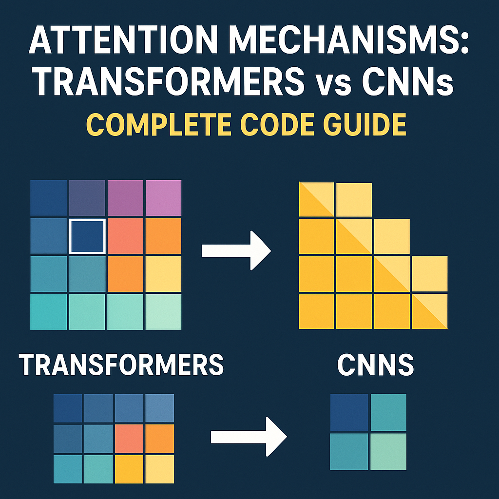

Attention Mechanisms: Transformers vs CNNs - Complete Code Guide

Introduction
Attention mechanisms have revolutionized deep learning by allowing models to focus on relevant parts of input data. While Transformers use self-attention as their core mechanism, CNNs incorporate attention as an enhancement to their convolutional operations.
Transformer Attention
Multi-Head Self-Attention Implementation
import torch
import torch.nn as nn
import torch.nn.functional as F
import math
class MultiHeadAttention(nn.Module):
def __init__(self, d_model, num_heads, dropout=0.1):
super().__init__()
assert d_model % num_heads == 0
self.d_model = d_model
self.num_heads = num_heads
self.d_k = d_model // num_heads
# Linear projections for Q, K, V
self.w_q = nn.Linear(d_model, d_model)
self.w_k = nn.Linear(d_model, d_model)
self.w_v = nn.Linear(d_model, d_model)
self.w_o = nn.Linear(d_model, d_model)
self.dropout = nn.Dropout(dropout)
def scaled_dot_product_attention(self, Q, K, V, mask=None):
"""
Compute scaled dot-product attention
Args:
Q: Query matrix [batch_size, num_heads, seq_len, d_k]
K: Key matrix [batch_size, num_heads, seq_len, d_k]
V: Value matrix [batch_size, num_heads, seq_len, d_k]
mask: Optional mask [batch_size, 1, seq_len, seq_len]
"""
# Calculate attention scores
scores = torch.matmul(Q, K.transpose(-2, -1)) / math.sqrt(self.d_k)
# Apply mask if provided
if mask is not None:
scores = scores.masked_fill(mask == 0, -1e9)
# Softmax normalization
attention_weights = F.softmax(scores, dim=-1)
attention_weights = self.dropout(attention_weights)
# Apply attention to values
output = torch.matmul(attention_weights, V)
return output, attention_weights
def forward(self, query, key, value, mask=None):
batch_size, seq_len = query.size(0), query.size(1)
# Linear projections and reshape for multi-head
Q = self.w_q(query).view(batch_size, seq_len, self.num_heads, self.d_k).transpose(1, 2)
K = self.w_k(key).view(batch_size, seq_len, self.num_heads, self.d_k).transpose(1, 2)
V = self.w_v(value).view(batch_size, seq_len, self.num_heads, self.d_k).transpose(1, 2)
# Apply attention
attention_output, attention_weights = self.scaled_dot_product_attention(Q, K, V, mask)
# Concatenate heads
attention_output = attention_output.transpose(1, 2).contiguous().view(
batch_size, seq_len, self.d_model
)
# Final linear projection
output = self.w_o(attention_output)
return output, attention_weights
# Complete Transformer Block
class TransformerBlock(nn.Module):
def __init__(self, d_model, num_heads, d_ff, dropout=0.1):
super().__init__()
self.attention = MultiHeadAttention(d_model, num_heads, dropout)
self.norm1 = nn.LayerNorm(d_model)
self.norm2 = nn.LayerNorm(d_model)
self.feed_forward = nn.Sequential(
nn.Linear(d_model, d_ff),
nn.ReLU(),
nn.Dropout(dropout),
nn.Linear(d_ff, d_model)
)
self.dropout = nn.Dropout(dropout)
def forward(self, x, mask=None):
# Self-attention with residual connection
attn_output, attn_weights = self.attention(x, x, x, mask)
x = self.norm1(x + self.dropout(attn_output))
# Feed-forward with residual connection
ff_output = self.feed_forward(x)
x = self.norm2(x + self.dropout(ff_output))
return x, attn_weights
# Example usage
def transformer_example():
batch_size, seq_len, d_model = 2, 10, 512
num_heads, d_ff = 8, 2048
# Create input
x = torch.randn(batch_size, seq_len, d_model)
# Create transformer block
transformer = TransformerBlock(d_model, num_heads, d_ff)
# Forward pass
output, attention_weights = transformer(x)
print(f"Input shape: {x.shape}")
print(f"Output shape: {output.shape}")
print(f"Attention weights shape: {attention_weights.shape}")
return output, attention_weightsPositional Encoding for Transformers
class PositionalEncoding(nn.Module):
def __init__(self, d_model, max_len=5000):
super().__init__()
pe = torch.zeros(max_len, d_model)
position = torch.arange(0, max_len).unsqueeze(1).float()
div_term = torch.exp(torch.arange(0, d_model, 2).float() *
-(math.log(10000.0) / d_model))
pe[:, 0::2] = torch.sin(position * div_term)
pe[:, 1::2] = torch.cos(position * div_term)
self.register_buffer('pe', pe.unsqueeze(0))
def forward(self, x):
return x + self.pe[:, :x.size(1)]CNN Attention
Spatial Attention Mechanism
class SpatialAttention(nn.Module):
def __init__(self, kernel_size=7):
super().__init__()
self.conv = nn.Conv2d(2, 1, kernel_size, padding=kernel_size//2, bias=False)
self.sigmoid = nn.Sigmoid()
def forward(self, x):
# Compute spatial statistics
avg_pool = torch.mean(x, dim=1, keepdim=True) # [B, 1, H, W]
max_pool, _ = torch.max(x, dim=1, keepdim=True) # [B, 1, H, W]
# Concatenate along channel dimension
spatial_info = torch.cat([avg_pool, max_pool], dim=1) # [B, 2, H, W]
# Generate attention map
attention_map = self.conv(spatial_info) # [B, 1, H, W]
attention_map = self.sigmoid(attention_map)
# Apply attention
return x * attention_map
class ChannelAttention(nn.Module):
def __init__(self, in_channels, reduction_ratio=16):
super().__init__()
self.avg_pool = nn.AdaptiveAvgPool2d(1)
self.max_pool = nn.AdaptiveMaxPool2d(1)
self.fc = nn.Sequential(
nn.Linear(in_channels, in_channels // reduction_ratio, bias=False),
nn.ReLU(),
nn.Linear(in_channels // reduction_ratio, in_channels, bias=False)
)
self.sigmoid = nn.Sigmoid()
def forward(self, x):
b, c, h, w = x.size()
# Global average pooling and max pooling
avg_pool = self.avg_pool(x).view(b, c)
max_pool = self.max_pool(x).view(b, c)
# Channel attention
avg_out = self.fc(avg_pool)
max_out = self.fc(max_pool)
# Combine and apply sigmoid
channel_attention = self.sigmoid(avg_out + max_out).view(b, c, 1, 1)
return x * channel_attention
# CBAM (Convolutional Block Attention Module)
class CBAM(nn.Module):
def __init__(self, in_channels, reduction_ratio=16, kernel_size=7):
super().__init__()
self.channel_attention = ChannelAttention(in_channels, reduction_ratio)
self.spatial_attention = SpatialAttention(kernel_size)
def forward(self, x):
# Apply channel attention first
x = self.channel_attention(x)
# Then apply spatial attention
x = self.spatial_attention(x)
return x
# Self-Attention for CNNs
class SelfAttention2D(nn.Module):
def __init__(self, in_channels):
super().__init__()
self.in_channels = in_channels
self.query_conv = nn.Conv2d(in_channels, in_channels // 8, 1)
self.key_conv = nn.Conv2d(in_channels, in_channels // 8, 1)
self.value_conv = nn.Conv2d(in_channels, in_channels, 1)
self.gamma = nn.Parameter(torch.zeros(1))
self.softmax = nn.Softmax(dim=-1)
def forward(self, x):
batch_size, channels, height, width = x.size()
# Generate Q, K, V
proj_query = self.query_conv(x).view(batch_size, -1, width * height).permute(0, 2, 1)
proj_key = self.key_conv(x).view(batch_size, -1, width * height)
proj_value = self.value_conv(x).view(batch_size, -1, width * height)
# Compute attention
energy = torch.bmm(proj_query, proj_key)
attention = self.softmax(energy)
# Apply attention to values
out = torch.bmm(proj_value, attention.permute(0, 2, 1))
out = out.view(batch_size, channels, height, width)
# Residual connection with learnable weight
out = self.gamma * out + x
return out
# CNN with Attention
class AttentionCNN(nn.Module):
def __init__(self, num_classes=10):
super().__init__()
self.conv1 = nn.Conv2d(3, 64, 3, padding=1)
self.cbam1 = CBAM(64)
self.conv2 = nn.Conv2d(64, 128, 3, padding=1)
self.cbam2 = CBAM(128)
self.conv3 = nn.Conv2d(128, 256, 3, padding=1)
self.self_attention = SelfAttention2D(256)
self.pool = nn.AdaptiveAvgPool2d(1)
self.classifier = nn.Linear(256, num_classes)
def forward(self, x):
# First block
x = F.relu(self.conv1(x))
x = self.cbam1(x)
x = F.max_pool2d(x, 2)
# Second block
x = F.relu(self.conv2(x))
x = self.cbam2(x)
x = F.max_pool2d(x, 2)
# Third block with self-attention
x = F.relu(self.conv3(x))
x = self.self_attention(x)
x = F.max_pool2d(x, 2)
# Classification
x = self.pool(x)
x = x.view(x.size(0), -1)
x = self.classifier(x)
return x
# Example usage
def cnn_attention_example():
batch_size = 4
x = torch.randn(batch_size, 3, 224, 224)
model = AttentionCNN(num_classes=1000)
output = model(x)
print(f"Input shape: {x.shape}")
print(f"Output shape: {output.shape}")
return outputKey Differences
1. Computational Complexity
def attention_complexity_comparison():
"""
Compare computational complexity of different attention mechanisms
"""
# Transformer Self-Attention: O(n²d) where n=sequence length, d=dimension
def transformer_complexity(seq_len, d_model):
return seq_len * seq_len * d_model
# CNN Spatial Attention: O(HW) where H=height, W=width
def spatial_attention_complexity(height, width):
return height * width
# CNN Channel Attention: O(C) where C=channels
def channel_attention_complexity(channels):
return channels
# Example calculations
seq_len, d_model = 512, 512
height, width, channels = 224, 224, 256
transformer_ops = transformer_complexity(seq_len, d_model)
spatial_ops = spatial_attention_complexity(height, width)
channel_ops = channel_attention_complexity(channels)
print(f"Transformer attention operations: {transformer_ops:,}")
print(f"CNN spatial attention operations: {spatial_ops:,}")
print(f"CNN channel attention operations: {channel_ops:,}")
return {
'transformer': transformer_ops,
'spatial': spatial_ops,
'channel': channel_ops
}2. Information Flow Patterns
class AttentionAnalysis:
@staticmethod
def analyze_transformer_attention(attention_weights):
"""
Analyze attention patterns in Transformers
Args:
attention_weights: [batch_size, num_heads, seq_len, seq_len]
"""
batch_size, num_heads, seq_len, _ = attention_weights.shape
# Average attention across heads
avg_attention = attention_weights.mean(dim=1) # [batch_size, seq_len, seq_len]
# Compute attention statistics
max_attention = avg_attention.max(dim=-1)[0] # Max attention per position
attention_entropy = -torch.sum(avg_attention * torch.log(avg_attention + 1e-8), dim=-1)
return {
'max_attention': max_attention,
'attention_entropy': attention_entropy,
'global_connectivity': True, # All positions can attend to all others
'pattern': 'sequence-to-sequence'
}
@staticmethod
def analyze_cnn_attention(feature_map, attention_map):
"""
Analyze attention patterns in CNNs
Args:
feature_map: [batch_size, channels, height, width]
attention_map: [batch_size, 1, height, width] or [batch_size, channels, 1, 1]
"""
if attention_map.dim() == 4 and attention_map.size(2) == 1:
# Channel attention
attention_type = 'channel'
local_connectivity = False
else:
# Spatial attention
attention_type = 'spatial'
local_connectivity = True
return {
'attention_type': attention_type,
'local_connectivity': local_connectivity,
'pattern': 'spatial-hierarchy' if attention_type == 'spatial' else 'channel-selection'
}Performance Comparison
import time
import torch.nn.functional as F
class PerformanceBenchmark:
def __init__(self):
self.device = torch.device('cuda' if torch.cuda.is_available() else 'cpu')
def benchmark_transformer_attention(self, batch_size=32, seq_len=512, d_model=512, num_heads=8):
"""Benchmark Transformer attention"""
model = MultiHeadAttention(d_model, num_heads).to(self.device)
x = torch.randn(batch_size, seq_len, d_model).to(self.device)
# Warmup
for _ in range(10):
_ = model(x, x, x)
# Benchmark
torch.cuda.synchronize() if torch.cuda.is_available() else None
start_time = time.time()
for _ in range(100):
output, _ = model(x, x, x)
torch.cuda.synchronize() if torch.cuda.is_available() else None
end_time = time.time()
return (end_time - start_time) / 100
def benchmark_cnn_attention(self, batch_size=32, channels=256, height=56, width=56):
"""Benchmark CNN attention"""
model = CBAM(channels).to(self.device)
x = torch.randn(batch_size, channels, height, width).to(self.device)
# Warmup
for _ in range(10):
_ = model(x)
# Benchmark
torch.cuda.synchronize() if torch.cuda.is_available() else None
start_time = time.time()
for _ in range(100):
output = model(x)
torch.cuda.synchronize() if torch.cuda.is_available() else None
end_time = time.time()
return (end_time - start_time) / 100
def run_comparison(self):
"""Run performance comparison"""
transformer_time = self.benchmark_transformer_attention()
cnn_time = self.benchmark_cnn_attention()
print(f"Transformer attention time: {transformer_time:.4f}s")
print(f"CNN attention time: {cnn_time:.4f}s")
print(f"Speedup: {transformer_time/cnn_time:.2f}x")
return {
'transformer_time': transformer_time,
'cnn_time': cnn_time,
'speedup': transformer_time/cnn_time
}
# Memory usage comparison
def memory_comparison():
"""Compare memory usage of different attention mechanisms"""
def get_memory_usage():
if torch.cuda.is_available():
return torch.cuda.memory_allocated() / 1024**2 # MB
return 0
# Clear memory
torch.cuda.empty_cache() if torch.cuda.is_available() else None
# Transformer attention
transformer_model = MultiHeadAttention(512, 8)
x = torch.randn(32, 512, 512)
if torch.cuda.is_available():
transformer_model = transformer_model.cuda()
x = x.cuda()
transformer_memory = get_memory_usage()
_, _ = transformer_model(x, x, x)
transformer_memory = get_memory_usage() - transformer_memory
# Clear memory
del transformer_model, x
torch.cuda.empty_cache() if torch.cuda.is_available() else None
# CNN attention
cnn_model = CBAM(256)
x = torch.randn(32, 256, 56, 56)
if torch.cuda.is_available():
cnn_model = cnn_model.cuda()
x = x.cuda()
cnn_memory = get_memory_usage()
_ = cnn_model(x)
cnn_memory = get_memory_usage() - cnn_memory
print(f"Transformer attention memory: {transformer_memory:.2f} MB")
print(f"CNN attention memory: {cnn_memory:.2f} MB")
return {
'transformer_memory': transformer_memory,
'cnn_memory': cnn_memory
}When to Use Each
Decision Framework
class AttentionSelector:
@staticmethod
def recommend_attention_type(data_type, sequence_length=None, spatial_dims=None,
computational_budget='medium', task_type='classification'):
"""
Recommend attention mechanism based on requirements
Args:
data_type: 'sequential', 'spatial', 'mixed'
sequence_length: Length of sequences (for sequential data)
spatial_dims: (height, width) for spatial data
computational_budget: 'low', 'medium', 'high'
task_type: 'classification', 'generation', 'detection'
"""
recommendations = []
# Sequential data
if data_type == 'sequential':
if sequence_length and sequence_length > 1000 and computational_budget == 'low':
recommendations.append({
'type': 'Local Attention',
'reason': 'Long sequences with limited compute',
'implementation': 'sliding_window_attention'
})
else:
recommendations.append({
'type': 'Transformer Self-Attention',
'reason': 'Global context modeling for sequences',
'implementation': 'MultiHeadAttention'
})
# Spatial data
elif data_type == 'spatial':
if spatial_dims and spatial_dims[0] * spatial_dims[1] > 224 * 224:
recommendations.append({
'type': 'CNN Spatial + Channel Attention',
'reason': 'High-resolution spatial data',
'implementation': 'CBAM'
})
else:
recommendations.append({
'type': 'CNN Self-Attention',
'reason': 'Moderate resolution with global context',
'implementation': 'SelfAttention2D'
})
# Mixed data
elif data_type == 'mixed':
recommendations.append({
'type': 'Hybrid Attention',
'reason': 'Combined sequential and spatial processing',
'implementation': 'transformer_cnn_hybrid'
})
return recommendations
@staticmethod
def create_hybrid_model(input_shape, num_classes):
"""Create a hybrid model combining both attention types"""
class HybridAttentionModel(nn.Module):
def __init__(self, input_shape, num_classes):
super().__init__()
# CNN backbone with attention
self.cnn_backbone = nn.Sequential(
nn.Conv2d(input_shape[0], 64, 3, padding=1),
nn.ReLU(),
CBAM(64),
nn.MaxPool2d(2),
nn.Conv2d(64, 128, 3, padding=1),
nn.ReLU(),
CBAM(128),
nn.MaxPool2d(2),
nn.Conv2d(128, 256, 3, padding=1),
nn.ReLU(),
SelfAttention2D(256)
)
# Flatten and prepare for transformer
self.flatten = nn.AdaptiveAvgPool2d(8) # 8x8 spatial grid
self.embed_dim = 256
# Transformer layers
self.transformer = nn.Sequential(
*[TransformerBlock(self.embed_dim, 8, 1024) for _ in range(3)]
)
# Classification head
self.classifier = nn.Linear(self.embed_dim, num_classes)
def forward(self, x):
# CNN processing
x = self.cnn_backbone(x)
# Reshape for transformer
batch_size = x.size(0)
x = self.flatten(x) # [B, 256, 8, 8]
x = x.flatten(2).transpose(1, 2) # [B, 64, 256]
# Transformer processing
for transformer_block in self.transformer:
x, _ = transformer_block(x)
# Global average pooling and classification
x = x.mean(dim=1) # [B, 256]
x = self.classifier(x)
return x
return HybridAttentionModel(input_shape, num_classes)
# Usage examples
def usage_examples():
"""Demonstrate when to use each attention type"""
selector = AttentionSelector()
# Example 1: NLP task
nlp_rec = selector.recommend_attention_type(
data_type='sequential',
sequence_length=512,
computational_budget='high',
task_type='generation'
)
# Example 2: Computer Vision task
cv_rec = selector.recommend_attention_type(
data_type='spatial',
spatial_dims=(224, 224),
computational_budget='medium',
task_type='classification'
)
# Example 3: Video analysis
video_rec = selector.recommend_attention_type(
data_type='mixed',
sequence_length=30,
spatial_dims=(112, 112),
computational_budget='high',
task_type='detection'
)
print("NLP Recommendation:", nlp_rec)
print("Computer Vision Recommendation:", cv_rec)
print("Video Analysis Recommendation:", video_rec)
return nlp_rec, cv_rec, video_recSummary
| Aspect | Transformer Attention | CNN Attention |
|---|---|---|
| Scope | Global, all-to-all | Local, spatial/channel-wise |
| Complexity | O(n²) | O(HW) or O(C) |
| Best For | Sequential data, language | Spatial data, images |
| Memory | High | Moderate |
| Parallelization | Limited by sequence length | Highly parallelizable |
| Interpretability | Attention weights show relationships | Spatial/channel importance maps |
Choose Transformer attention for tasks requiring global context modeling, and CNN attention for spatially-structured data where local relationships dominate. Consider hybrid approaches for complex multi-modal tasks.